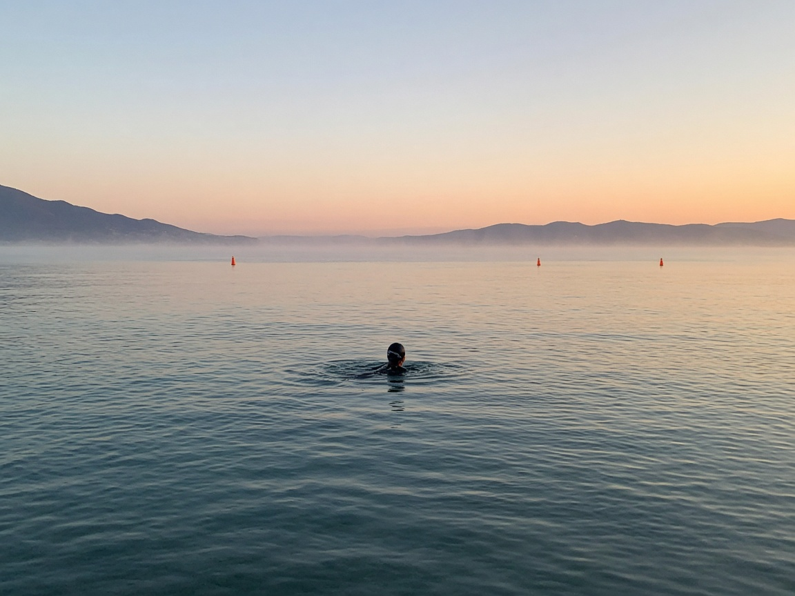

指導対象
幼児からマスターズまで
年齢や目的の違うスイマーと向き合い、それぞれの段階に合わせた指導を行っています。
プロフィール・指導者紹介
Swim Coach Labo を運営する、匿名水泳コーチです。
選手としての経験とコーチとしての視点から、水泳の技術・練習・選手育成を発信しています。
01
はじめまして。「Swim Coach Labo」を運営している、匿名水泳コーチです。
私は高校3年生まで選手として様々な経験を積み、引退後はスイミングコーチのアルバイトを3年していました。現在は、その経験を活かしてジュニアスイマーを中心とした水泳指導に携わっています。
この活動では、選手としての経験とコーチとしての視点の両方から、水泳の技術・練習・選手育成について発信しています。

02
ベビースイミングから高校3年生まで、水泳を続けてきました。
プールの競泳に加え、オープンウォータースイミングの競技経験があります。
学生時代に全国大会への出場経験があります。

長年の競技生活を通して、記録が伸びる喜びだけでなく、思うように結果が出ない苦しさや、努力が報われない悔しさも経験してきました。
だからこそ、選手の気持ちに寄り添った指導を大切にしています。
03


指導対象
年齢や目的の違うスイマーと向き合い、それぞれの段階に合わせた指導を行っています。
現在の現場
小学生を中心とした選手コースの指導にも携わり、競技としての水泳を支えています。
指導の視点
泳ぎの技術だけでなく、身体の発達段階や選手それぞれの特徴を考慮し、長期的な成長につながる指導を目指しています。
今後も水泳指導・スポーツ科学・身体の発達などについて学び続け、指導者としての専門性を高めていきます。
04
目先のタイムだけにとらわれない選手育成です。
選手一人ひとりの個性や成長段階を理解する
正しい泳ぎの技術を身につける
根拠のある練習メニューを考える
小さな成長や変化を見逃さない
水泳を通して自分で考え、行動できる選手を育てる
速くなることはもちろん大切です。
しかし、それ以上に選手が長く競技を続け、自分自身の可能性を広げられるような指導を目指しています。
05
Goal 01
水を好きになるお子様を1人でも増やし、正しい泳ぎを身につけてもらうこと。
Goal 02
ジュニアスイマーを全国大会・ジュニアオリンピック（JO）で活躍できる選手へと育成すること。
そのために、経験や感覚だけに頼るのではなく、科学的な根拠に基づいた指導を追求していきます。選手・保護者・指導者、それぞれの立場に寄り添いながら、水泳に関する知識や経験を共有していきたいと考えています。
06
水泳には、一人ひとり違った成長の仕方があります。
すぐに結果が出る選手もいれば、時間をかけて大きく成長する選手もいます。
大切なのは、その選手に合った方法を見つけ、可能性を信じて向き合い続けること。
この場所が、水泳に関わるすべての人にとって、新しい気付きや成長のきっかけになれば嬉しいです。